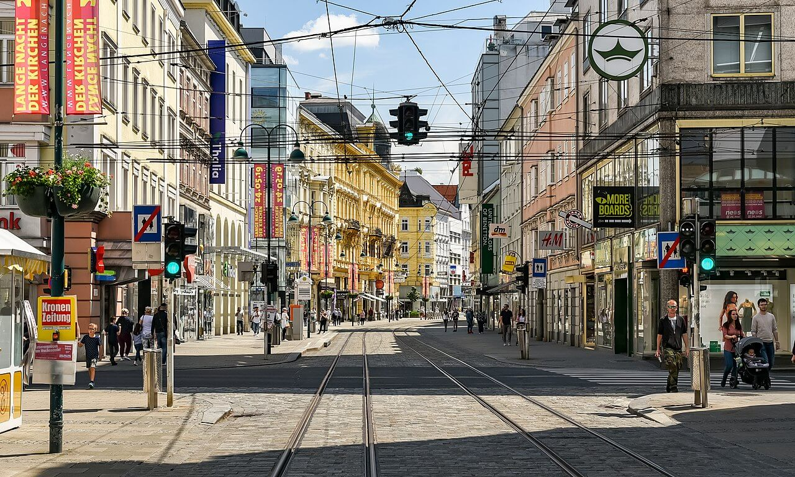
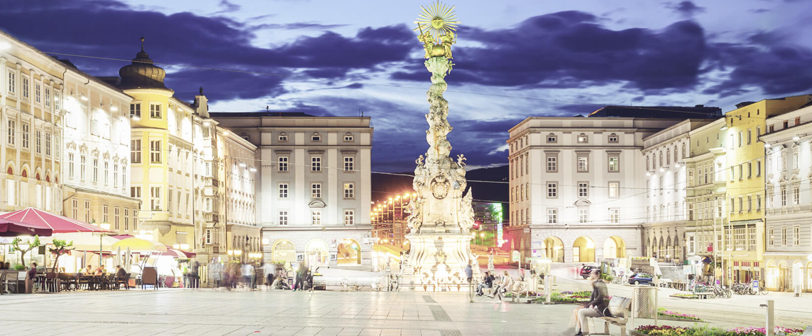
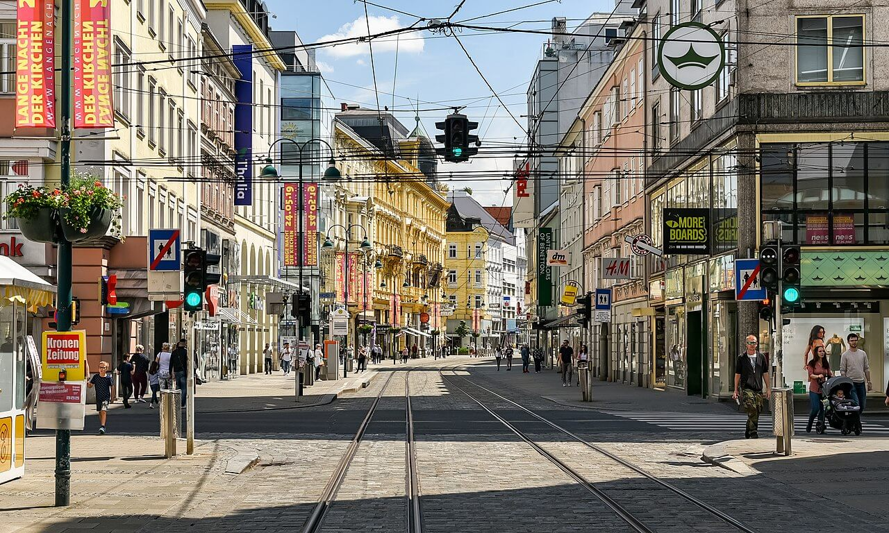
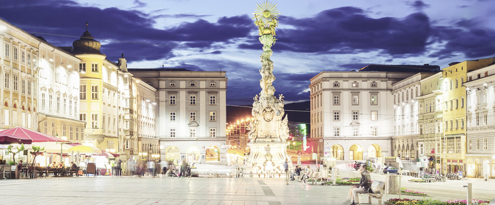

Linz ist die Landeshauptstadt von Oberösterreich und mit 206.595 Einwohnern (Stand 1. Jänner 2020) nach Wien und Graz die drittgrößte Stadt Österreichs und das Zentrum des mit 801.085 Menschen (Stand 2019) zweitgrößten Ballungsraumes des Landes.[3] Die Stadt an der Donau hat eine Fläche von 95,99 km² und ist Zentrum des oberösterreichischen Zentralraums. Als Statutarstadt ist sie sowohl Gemeinde als auch politischer Bezirk; außerdem Sitz der Bezirkshauptmannschaften der benachbarten Bezirke Linz-Land und Urfahr-Umgebung. Nach dem Ende des Zweiten Weltkriegs (1945) hatte Linz den Ruf einer staubigen Stahlstadt, den sie dem größten Arbeitgeber, den Stahlwerken der heutigen Voestalpine AG, verdankte. Doch durch verbesserten Umweltschutz und zahlreiche Initiativen im Kulturbereich, beispielsweise Veranstaltungen wie die Linzer Klangwolke, das Brucknerfest, das Pflasterspektakel und den Prix Ars Electronica bzw. das Ars-Electronica-Festival, gewann die Stadt sukzessive ein neues Image. Seit 2004 wird jährlich das Filmfestival Crossing Europe veranstaltet. 2013 wurde das neue Musiktheater am Volksgarten, ein modernes Theater- bzw. Opernhaus, eröffnet. Linz konnte sich mit diesen und weiteren Initiativen als Kulturstadt positionieren, wobei auch Strukturen der alten Industriestadt zum Teil noch sichtbar sind. Dazu passend weist Linz als Universitätsstadt mit mehreren Universitäten auch zahlreiche Studienangebote im künstlerischen und kulturellen Bereich auf. Die Stadt ist namensgebend für die Linzer Torte, deren Rezept als das älteste bekannte Tortenrezept der Welt gilt. Die Stadt wird inoffiziell auch als Linz an der Donau bezeichnet, um nicht mit der deutschen Stadt Linz am Rhein verwechselt zu werden.

 


